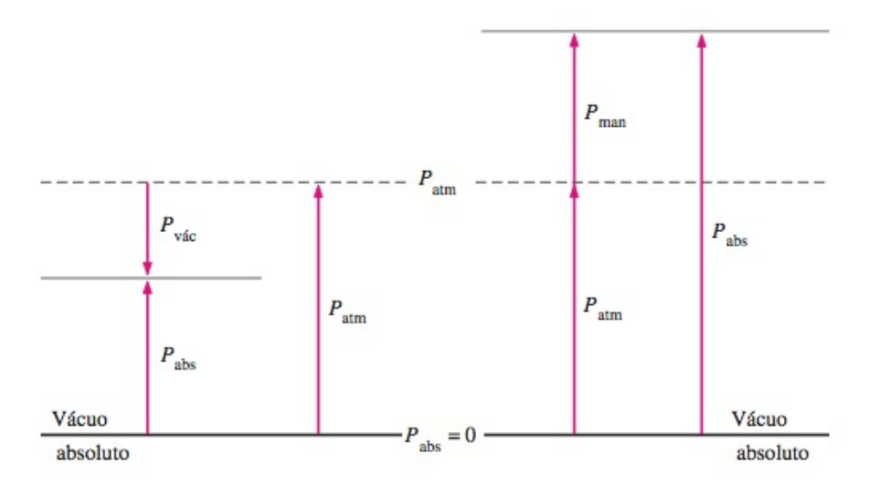
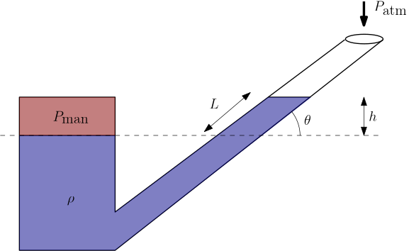

Objetivos
Ao final desta aula, você deverá ser capaz de:
- Diferenciar pressão absoluta, pressão atmosférica, pressão manométrica e pressão de vácuo.
- Compreender o funcionamento dos principais tipos de manômetros.
- Resolver problemas com manômetros utilizando o Método do Fluxo.
- Interpretar medições com manômetros de tubo em U, manômetros diferenciais e manômetros inclinados.
- Explicar por que a pressão atmosférica padrão é equivalente a aproximadamente 760 mmHg.
- Compreender o Princípio de Pascal e suas aplicações em sistemas hidráulicos.
- Resolver exemplos numéricos envolvendo prensas hidráulicas, macacos hidráulicos e transmissão de pressão em fluidos confinados.
Introdução
Imagine que um técnico precisa verificar se a pressão de uma linha de ar comprimido está adequada. Ele conecta um tubo em U contendo mercúrio ao ponto de medição e observa que uma das colunas desce enquanto a outra sobe. Como transformar esse desnível em pressão?
Como a altura de uma coluna líquida pode indicar a pressão de um gás ou de outro líquido?
Agora pense em uma oficina mecânica: uma pessoa aplica uma força relativamente pequena na alavanca de um macaco hidráulico e consegue levantar um automóvel. Esse efeito parece uma multiplicação de força, mas está baseado em uma propriedade simples dos fluidos em repouso.
Como uma pequena força aplicada em uma área reduzida pode produzir uma força muito maior em outra região do sistema?
Essas duas situações são aplicações diretas da hidrostática. Na primeira, usamos os manômetros, que transformam diferenças de pressão em diferenças de altura. Na segunda, usamos o Princípio de Pascal, que descreve como a pressão aplicada a um fluido confinado é transmitida pelo sistema.
Pressão Absoluta, Manométrica e de Vácuo
Antes de estudar os manômetros, é importante organizar as formas de representar pressão.
Pressão absoluta é medida em relação ao vácuo absoluto. É a pressão real do fluido:
\[P_{\text{abs}} \geq 0\]
Pressão atmosférica é a pressão exercida pelo ar atmosférico. Ao nível do mar, adota-se frequentemente:
\[P_{\text{atm}} = 101325\,\text{Pa} = 101{,}325\,\text{kPa} = 1\,\text{atm}\]
Pressão manométrica é medida em relação à pressão atmosférica local:
\[\boxed{P_{\text{man}} = P_{\text{abs}} - P_{\text{atm}}}\]
Essa relação deve ser lida como uma comparação com a atmosfera. A linha da pressão atmosférica funciona como o zero do manômetro, mas não como o zero absoluto da pressão. Assim:
- Se \(P_{\text{abs}} > P_{\text{atm}}\), então \(P_{\text{man}} > 0\). A pressão está acima da atmosférica.
- Se \(P_{\text{abs}} = P_{\text{atm}}\), então \(P_{\text{man}} = 0\). A pressão absoluta é igual à pressão ambiente.
- Se \(P_{\text{abs}} < P_{\text{atm}}\), então \(P_{\text{man}} < 0\). A pressão está abaixo da atmosférica e dizemos que existe vácuo relativo.
Pressão de vácuo pode ser escrita como o quanto a pressão absoluta está abaixo da atmosférica:
\[\boxed{P_{\text{vac}} = P_{\text{atm}} - P_{\text{abs}}}\]
Portanto:
\[P_{\text{vac}} = -P_{\text{man}} \quad \text{quando} \quad P_{\text{man}} < 0\]
É importante notar que pressão de vácuo não é uma pressão absoluta negativa. A pressão absoluta nunca fica abaixo de zero. O sinal negativo aparece apenas na pressão manométrica, porque ela foi definida como diferença em relação à atmosfera:
\[P_{\text{man}} = P_{\text{abs}} - P_{\text{atm}}\]
Se a pressão absoluta do recipiente é menor que a atmosférica, a subtração fica negativa. Por exemplo, se \(P_{\text{abs}}=98\,\text{kPa}\) e \(P_{\text{atm}}=101\,\text{kPa}\), então:
\[P_{\text{man}}=98-101=-3\,\text{kPa}\]
Esse valor significa apenas que a pressão interna está \(3\,\text{kPa}\) abaixo da atmosfera. A pressão de vácuo correspondente é positiva:
\[P_{\text{vac}}=3\,\text{kPa}\]
Uma forma simples de interpretar é:
- A pressão absoluta mede a pressão a partir do vácuo absoluto.
- A pressão atmosférica é a pressão do ar ambiente.
- A pressão manométrica positiva indica quanto a pressão está acima da atmosfera.
- A pressão de vácuo indica quanto a pressão está abaixo da atmosfera.
Por exemplo, se um recipiente está com pressão absoluta menor que a atmosférica, ele ainda possui pressão. Porém, comparado com o ambiente externo, sua pressão é menor. Por isso dizemos que há vácuo relativo.

Na figura, o vácuo absoluto é o nível em que \(P_{\text{abs}}=0\). A pressão absoluta sempre é medida a partir desse nível. A pressão atmosférica aparece como uma linha de referência intermediária. Quando o estado do sistema fica acima dessa linha, a diferença até a atmosfera é uma pressão manométrica positiva. Quando o estado fica abaixo dessa linha, a diferença até a atmosfera é chamada de pressão de vácuo, e a pressão manométrica é negativa.
Manômetros
Manômetros são instrumentos utilizados para medir pressão ou diferença de pressão. Em hidrostática, os manômetros de coluna líquida são especialmente importantes porque sua análise vem diretamente do Teorema de Stevin:
\[\Delta P = \rho g \Delta h\]
Nos manômetros de coluna, a diferença de pressão é equilibrada pelo peso de uma coluna de fluido manométrico. Quanto maior a diferença de pressão, maior o desnível entre as colunas.
O fluido manométrico deve ser escolhido de acordo com a faixa de pressão a medir. Para pressões pequenas, usam-se fluidos menos densos, como água ou óleo. Para pressões maiores, usa-se frequentemente mercúrio, pois sua densidade é elevada.
Método do Fluxo Aplicado a Manômetros
Na aula anterior, utilizamos o Método do Fluxo para vasos comunicantes. O mesmo procedimento é aplicado aos manômetros.
Ao percorrer um caminho contínuo de um ponto \(A\) até um ponto \(B\):
\[\boxed{P_A + \sum(\pm \rho g \Delta h) - P_B = 0}\]
Regras práticas:
- Ao descer em um fluido, a pressão aumenta: \(+\rho g \Delta h\).
- Ao subir em um fluido, a pressão diminui: \(-\rho g \Delta h\).
- Ao se mover horizontalmente dentro do mesmo fluido, a pressão permanece constante.
- Ao passar de um fluido para outro, usa-se a densidade do fluido presente no trecho percorrido.
- Se uma extremidade está aberta para a atmosfera, a pressão naquele ponto é \(P_{\text{atm}}\).
Esse método evita memorizar muitas fórmulas diferentes. O mais importante é escolher um caminho claro e manter os sinais consistentes.
Tipos de Manômetros
Manômetro Aberto
O manômetro aberto possui uma extremidade conectada ao ponto onde se deseja medir a pressão e a outra aberta para a atmosfera. Ele mede a pressão manométrica do ponto conectado.

Se a densidade do gás conectado for desprezível e o desnível do fluido manométrico for \(h\), a pressão manométrica é:
\[\boxed{P_{\text{man}} = \rho_{\text{m}} g h}\]
em que \(\rho_{\text{m}}\) é a densidade do fluido manométrico.
Se a pressão do ponto conectado for menor que a atmosférica, o sinal se inverte:
\[P_{\text{man}} = -\rho_{\text{m}} g h\]
Manômetro Diferencial
O manômetro diferencial possui as duas extremidades conectadas a dois pontos de um sistema. Ele mede a diferença de pressão entre esses pontos.

Quando os dois pontos estão em uma mesma cota, preenchidos pelo mesmo fluido da tubulação, e o fluido manométrico é mais denso, uma forma comum do resultado é:
\[\boxed{P_1 - P_2 = (\rho_{\text{m}} - \rho_{\text{f}})g\Delta h}\]
em que:
- \(\rho_{\text{m}}\) é a densidade do fluido manométrico.
- \(\rho_{\text{f}}\) é a densidade do fluido da tubulação.
- \(\Delta h\) é o desnível entre as interfaces do fluido manométrico.
Essa expressão não deve ser decorada sem cuidado: se os pontos estiverem em cotas diferentes ou se houver fluidos diferentes nas conexões, é mais seguro usar o Método do Fluxo.
Manômetro Inclinado
O manômetro inclinado é usado para medir pequenas diferenças de pressão com maior sensibilidade. Em vez de observar diretamente uma pequena altura vertical \(h\), mede-se um deslocamento maior \(L\) ao longo do tubo inclinado.

A altura vertical correspondente é:
\[\boxed{h = L\sin\theta}\]
Portanto:
\[\boxed{P_{\text{man}} = \rho_{\text{m}}gL\sin\theta}\]
Quanto menor o ângulo \(\theta\), maior será o deslocamento \(L\) para a mesma pressão, facilitando a leitura.
Manômetro Fechado ou Barômetro
No manômetro fechado, uma das extremidades pode estar evacuada ou fechada com uma pressão conhecida. Quando a extremidade superior está praticamente em vácuo, o instrumento se aproxima do funcionamento de um barômetro de mercúrio.
O barômetro mede a pressão atmosférica pela altura da coluna de mercúrio sustentada pela atmosfera:
\[P_{\text{atm}} = \rho_{\text{Hg}}gh_{\text{Hg}}\]
Essa ideia é a base da unidade prática milímetro de mercúrio (\(\text{mmHg}\)).

O Manômetro de Mercúrio e a Relação \(1\,\text{atm} = 760\,\text{mmHg}\)
O mercúrio foi historicamente muito utilizado em barômetros e manômetros porque possui densidade muito elevada. Isso permite medir pressões grandes com colunas relativamente pequenas.
Considere um barômetro de mercúrio em equilíbrio. Na superfície livre inferior atua a pressão atmosférica. No topo da coluna, dentro do tubo fechado, há aproximadamente vácuo. Aplicando o Teorema de Stevin:
\[P_{\text{atm}} = P_{\text{vácuo}} + \rho_{\text{Hg}}gh\]
Como \(P_{\text{vácuo}} \approx 0\):
\[P_{\text{atm}} = \rho_{\text{Hg}}gh\]
Isolando \(h\):
\[h = \frac{P_{\text{atm}}}{\rho_{\text{Hg}}g}\]
Usando:
- \(P_{\text{atm}} = 101325\,\text{Pa}\).
- \(\rho_{\text{Hg}} = 13600\,\text{kg}/\text{m}^3\).
- \(g = 9{,}807\,\text{m}/\text{s}^2\).
Temos:
\[h = \frac{101325}{13600\cdot 9{,}807}\]
\[h = 0{,}7597\,\text{m}\]
Convertendo para milímetros:
\[h = 759{,}7\,\text{mm} \approx 760\,\text{mm}\]
Portanto:
\[\boxed{1\,\text{atm} \approx 760\,\text{mmHg}}\]
Interpretação: dizer que uma pressão vale \(760\,\text{mmHg}\) significa dizer que ela é capaz de equilibrar uma coluna de mercúrio de aproximadamente \(760\,\text{mm}\) de altura.
Como \(760\,\text{mmHg} = 101325\,\text{Pa}\):
\[\boxed{1\,\text{mmHg} \approx 133{,}3\,\text{Pa}}\]
Exemplos Resolvidos
Nos exemplos a seguir, adotaremos o Método do Fluxo, reforçando o procedimento usado na aula anterior.
Valores constantes adotados:
- \(g = 9{,}807\,\text{m}/\text{s}^2\).
- \(P_{\text{atm}} = 101325\,\text{Pa}\).
- \(\rho_{\text{água}} = 997\,\text{kg}/\text{m}^3\).
- \(\rho_{\text{Hg}} = 13600\,\text{kg}/\text{m}^3\).
Exemplo 5.1: Manômetro aberto com mercúrio
Um manômetro aberto com mercúrio é conectado a um reservatório de ar comprimido. A extremidade direita está aberta para a atmosfera. O nível do mercúrio no lado conectado ao reservatório fica \(0{,}420\,\text{m}\) abaixo do nível do lado aberto. Determine a pressão manométrica do ar no reservatório em atm.
Dados:
- \(\rho_{\text{Hg}} = 13600\,\text{kg}/\text{m}^3\).
- \(h = 0{,}420\,\text{m}\).
Resolução pelo Método do Fluxo
Passo 1: Percorremos um caminho da esquerda para a direita, partindo da interface do lado conectado ao reservatório até a superfície aberta para a atmosfera.
- Partida: \(P_{\text{ar}}\).
- Subindo pelo mercúrio: \(-\rho_{\text{Hg}}gh\).
- Chegada: \(P_{\text{atm}}\).
Passo 2: Somar todos os termos do caminho e igualar a zero:
\[P_{\text{ar}} - \rho_{\text{Hg}}gh - P_{\text{atm}} = 0\]
Passo 3: Isolar a pressão manométrica:
\[P_{\text{ar}} - P_{\text{atm}} = \rho_{\text{Hg}}gh\]
Como:
\[P_{\text{man}}=P_{\text{ar}}-P_{\text{atm}}\]
temos, ainda de forma algébrica:
\[P_{\text{man}}=\rho_{\text{Hg}}gh\]
Passo 4: Substituir os valores com suas unidades e usar fatores de conversão unitários.
Lembrando que:
\[1\,\text{Pa}=1\,\frac{\text{kg}}{\text{m}\cdot\text{s}^2}\]
e:
\[1\,\text{atm}=101325\,\text{Pa}\]
podemos escrever:
\[ \begin{aligned} P_{\text{man}} &= \left(13600\,\frac{\text{kg}}{\text{m}^3}\right) \left(9{,}807\,\frac{\text{m}}{\text{s}^2}\right) \left(0{,}420\,\text{m}\right)\\ &\quad \times \left(\frac{1\,\text{Pa}}{1\,\text{kg}\,\text{m}^{-1}\text{s}^{-2}}\right) \left(\frac{1\,\text{atm}}{101325\,\text{Pa}}\right) \end{aligned} \]
Cancelando as unidades:
\[P_{\text{man}}= \frac{13600\cdot 9{,}807\cdot 0{,}420}{101325}\,\text{atm}\]
Cálculo único:
\[P_{\text{man}}=0{,}552850\,\text{atm}\]
Análise de algarismos significativos: \(13600\), \(9{,}807\) e \(0{,}420\) fornecem, no resultado, 3 algarismos significativos. Portanto:
\[\boxed{P_{\text{man}} = 0{,}553\,\text{atm}}\]
Interpretação: a pressão do ar está \(0{,}553\,\text{atm}\) acima da pressão atmosférica.
Se quisermos a pressão absoluta do ar, somamos a pressão atmosférica:
\[P_{\text{abs}}=P_{\text{atm}}+P_{\text{man}}=1{,}000+0{,}553=1{,}553\,\text{atm}\]
Assim:
\[\boxed{P_{\text{abs}} = 1{,}55\,\text{atm}}\]
Verificação matemática: o valor vem de \(13600\cdot 9{,}807\cdot 0{,}420/101325=0{,}552850\). Portanto, com 3 algarismos significativos, \(P_{\text{man}}=0{,}553\,\text{atm}\).
Exemplo 5.2: Manômetro aberto indicando vácuo
Um manômetro aberto contém água como fluido manométrico. Ele é conectado a um recipiente onde a pressão é menor que a atmosférica. Observa-se um desnível de \(0{,}350\,\text{m}\), com a coluna mais alta no lado conectado ao recipiente. Determine a pressão manométrica no recipiente.
Dados:
- \(\rho_{\text{água}} = 997\,\text{kg}/\text{m}^3\).
- \(h = 0{,}350\,\text{m}\).
Resolução pelo Método do Fluxo
Passo 1: Percorremos um caminho partindo da superfície aberta até a superfície do lado conectado ao recipiente.
- Partida: \(P_{\text{atm}}\).
- Subindo pela água: \(-\rho_{\text{água}}gh\).
- Chegada: \(P_{\text{rec}}\).
Passo 2: Aplicar o princípio do fluxo:
\[P_{\text{atm}} - \rho_{\text{água}}gh - P_{\text{rec}} = 0\]
Logo:
\[P_{\text{rec}} - P_{\text{atm}} = -\rho_{\text{água}}gh\]
Como:
\[P_{\text{man}}=P_{\text{rec}}-P_{\text{atm}}\]
então:
\[P_{\text{man}}=-\rho_{\text{água}}gh\]
Passo 3: Substituir os valores com unidades e converter para quilopascal usando fator unitário.
\[ \begin{aligned} P_{\text{man}} &= -\left(997\,\frac{\text{kg}}{\text{m}^3}\right) \left(9{,}807\,\frac{\text{m}}{\text{s}^2}\right) \left(0{,}350\,\text{m}\right)\\ &\quad \times \left(\frac{1\,\text{Pa}}{1\,\text{kg}\,\text{m}^{-1}\text{s}^{-2}}\right) \left(\frac{1\,\text{kPa}}{1000\,\text{Pa}}\right) \end{aligned} \]
Cancelando as unidades:
\[P_{\text{man}}= -\frac{997\cdot 9{,}807\cdot 0{,}350}{1000}\,\text{kPa}\]
Cálculo único:
\[P_{\text{man}}=-3{,}42215265\,\text{kPa}\]
Análise de algarismos significativos: \(997\) e \(0{,}350\) possuem 3 algarismos significativos, enquanto \(9{,}807\) possui 4. O resultado deve ter 3 algarismos significativos:
\[\boxed{P_{\text{man}} = -3{,}42\,\text{kPa}}\]
Interpretação: a pressão absoluta no recipiente está \(3{,}42\,\text{kPa}\) abaixo da pressão atmosférica. A pressão de vácuo é:
\[\boxed{P_{\text{vac}} = 3{,}42\,\text{kPa}}\]
Por que o valor ficou negativo? Porque a pressão manométrica é calculada por \(P_{\text{man}}=P_{\text{rec}}-P_{\text{atm}}\). Como o recipiente está em vácuo relativo, \(P_{\text{rec}}<P_{\text{atm}}\), então essa diferença é negativa. No Método do Fluxo, isso aparece porque partimos da superfície aberta, na atmosfera, e subimos uma altura \(h\) pela água; ao subir em um fluido em repouso, a pressão diminui. O sinal negativo indica apenas que a pressão interna está abaixo da atmosférica.
Verificação matemática: o valor vem de \(-997\cdot 9{,}807\cdot 0{,}350/1000=-3{,}42215265\). Portanto, com 3 algarismos significativos, \(P_{\text{man}}=-3{,}42\,\text{kPa}\) e \(P_{\text{vac}}=3{,}42\,\text{kPa}\).
Exemplo 5.3: Manômetro diferencial em uma tubulação de água
Um manômetro diferencial com mercúrio é conectado a dois pontos de uma tubulação que transporta água. Os pontos \(1\) e \(2\) estão na mesma cota. A interface do mercúrio está \(0{,}250\,\text{m}\) mais baixa no lado do ponto \(1\) do que no lado do ponto \(2\). Determine \(P_1 - P_2\).
Dados:
- \(\rho_{\text{água}} = 997\,\text{kg}/\text{m}^3\).
- \(\rho_{\text{Hg}} = 13600\,\text{kg}/\text{m}^3\).
- \(\Delta h = 0{,}250\,\text{m}\).
Resolução pelo Método do Fluxo
Passo 1: Percorremos um caminho partindo do ponto \(1\) até o ponto \(2\).
- Partida: \(P_1\).
- Descendo pela água até a interface mais baixa: contribuição comum que será compensada na subida.
- Subindo pelo mercúrio uma altura \(\Delta h\): \(-\rho_{\text{Hg}}g\Delta h\).
- Subindo ou descendo pela água até o ponto \(2\): contribuição resultante \(+\rho_{\text{água}}g\Delta h\) quando os pontos estão na mesma cota.
- Chegada: \(P_2\).
Passo 2: A soma das contribuições resulta em:
\[P_1 - \rho_{\text{Hg}}g\Delta h + \rho_{\text{água}}g\Delta h - P_2 = 0\]
Passo 3: Isolar a diferença de pressão:
\[P_1 - P_2 = (\rho_{\text{Hg}}-\rho_{\text{água}})g\Delta h\]
Passo 4: Substituir os valores:
\[ \begin{aligned} P_1-P_2 &= \left(13600-997\right)\frac{\text{kg}}{\text{m}^3} \left(9{,}807\,\frac{\text{m}}{\text{s}^2}\right) \left(0{,}250\,\text{m}\right)\\ &\quad \times \left(\frac{1\,\text{Pa}}{1\,\text{kg}\,\text{m}^{-1}\text{s}^{-2}}\right) \left(\frac{1\,\text{kPa}}{1000\,\text{Pa}}\right) \end{aligned} \]
Cancelando as unidades:
\[P_1-P_2= \frac{(13600-997)\cdot 9{,}807\cdot 0{,}250}{1000}\,\text{kPa}\]
Cálculo único:
\[P_1-P_2=30{,}89940525\,\text{kPa}\]
Análise de algarismos significativos: as densidades e o desnível foram adotados com 3 algarismos significativos, enquanto \(g\) possui 4. Logo, o resultado deve ser apresentado com 3 algarismos significativos:
\[\boxed{P_1 - P_2 = 30{,}9\,\text{kPa}}\]
Interpretação: o ponto \(1\) tem maior pressão, pois empurrou o mercúrio para baixo no seu lado do manômetro.
Verificação matemática: o valor vem de \((13600-997)\cdot 9{,}807\cdot 0{,}250/1000=30{,}89940525\). Portanto, com 3 algarismos significativos, \(P_1-P_2=30{,}9\,\text{kPa}\).
Exemplo 5.4: Manômetro inclinado
Um manômetro inclinado utiliza óleo com densidade \(\rho_{\text{óleo}} = 850\,\text{kg}/\text{m}^3\). O tubo está inclinado de \(\theta = 20^\circ\) em relação à horizontal. Quando uma pressão é aplicada, o óleo se desloca \(L = 0{,}120\,\text{m}\) ao longo do tubo. Determine a pressão manométrica aplicada.
Dados:
- \(\rho_{\text{óleo}} = 850\,\text{kg}/\text{m}^3\).
- \(L = 0{,}120\,\text{m}\).
- \(\theta = 20^\circ\).
Resolução pelo Método do Fluxo
Passo 1: Converter o deslocamento inclinado em altura vertical:
\[h = L\sin\theta\]
Passo 2: Aplicar a relação hidrostática, ainda de forma algébrica:
\[P_{\text{man}} = \rho_{\text{óleo}}gh\]
Substituindo \(h=L\sin\theta\):
\[P_{\text{man}}=\rho_{\text{óleo}}gL\sin\theta\]
Passo 3: Substituir os valores com unidades.
\[ \begin{aligned} P_{\text{man}} &= \left(850\,\frac{\text{kg}}{\text{m}^3}\right) \left(9{,}807\,\frac{\text{m}}{\text{s}^2}\right) \left(0{,}120\,\text{m}\right) \sin20^\circ\\ &\quad \times \left(\frac{1\,\text{Pa}}{1\,\text{kg}\,\text{m}^{-1}\text{s}^{-2}}\right) \end{aligned} \]
Cancelando as unidades:
\[P_{\text{man}}=850\cdot 9{,}807\cdot 0{,}120\cdot\sin20^\circ\,\text{Pa}\]
Cálculo único:
\[P_{\text{man}}=342{,}1275377\,\text{Pa}\]
Análise de algarismos significativos: considerando \(\rho_{\text{óleo}}\), \(L\) e \(\theta\) com precisão compatível com os dados do problema, o resultado é apresentado com 3 algarismos significativos:
\[\boxed{P_{\text{man}} = 342\,\text{Pa}}\]
Interpretação: a inclinação aumenta o deslocamento observado no tubo, mas a pressão depende apenas da componente vertical \(h\).
Verificação matemática: o valor vem de \(850\cdot 9{,}807\cdot 0{,}120\cdot\sin20^\circ=342{,}1275377\). Portanto, com 3 algarismos significativos, \(P_{\text{man}}=342\,\text{Pa}\).
Princípio de Pascal
O Princípio de Pascal estabelece que:
Uma variação de pressão aplicada a um fluido incompressível em repouso e confinado é transmitida integralmente a todos os pontos do fluido e às paredes do recipiente.

Em termos matemáticos, se uma pressão adicional \(\Delta P\) é aplicada a um ponto do fluido, essa mesma variação aparece em todos os pontos do sistema:
\[\boxed{\Delta P_1 = \Delta P_2}\]
Como pressão é força dividida por área:
\[P = \frac{F}{A}\]
em um sistema hidráulico ideal com dois êmbolos:
\[\frac{F_1}{A_1} = \frac{F_2}{A_2}\]
Logo:
\[\boxed{F_2 = F_1\frac{A_2}{A_1}}\]
Essa relação mostra que a força pode ser amplificada quando a área de saída é maior que a área de entrada.
Importante: o Princípio de Pascal não cria energia. Se a força aumenta, o deslocamento diminui. Em um sistema ideal:
\[F_1d_1 = F_2d_2\]
Assim, o trabalho de entrada é igual ao trabalho de saída, desprezando perdas por atrito, vazamentos e deformações.
Aplicações do Princípio de Pascal
- Prensa hidráulica
Uma pequena força aplicada em um êmbolo de área menor gera uma força maior em um êmbolo de área maior. É usada em processos de conformação, compactação e elevação de cargas.
- Macaco hidráulico
Muito usado em oficinas e veículos. A força aplicada manualmente aumenta a pressão do fluido, que atua sobre um pistão de maior área e levanta a carga.

- Freios hidráulicos
Ao pressionar o pedal, uma pressão é transmitida pelo fluido de freio até os pistões próximos às rodas. Essa pressão gera forças de frenagem.
- Elevadores hidráulicos
Utilizam fluido pressurizado para movimentar plataformas, cadeiras, mesas elevatórias e equipamentos industriais.
- Sistemas de direção e acionamento hidráulico
Máquinas agrícolas, escavadeiras, empilhadeiras e prensas industriais usam transmissão hidráulica de pressão para produzir forças elevadas com controle preciso.
Exemplos com o Princípio de Pascal
Exemplo 5.5: Prensa hidráulica
Uma prensa hidráulica possui um êmbolo menor com área \(A_1 = 5{,}0\,\text{cm}^2\) e um êmbolo maior com área \(A_2 = 250\,\text{cm}^2\). Uma força \(F_1 = 120\,\text{N}\) é aplicada no êmbolo menor. Determine a força exercida pelo êmbolo maior.
Dados:
- \(A_1 = 5{,}0\,\text{cm}^2\).
- \(A_2 = 250\,\text{cm}^2\).
- \(F_1 = 120\,\text{N}\).
Resolução
Pelo Princípio de Pascal:
\[\frac{F_1}{A_1} = \frac{F_2}{A_2}\]
Isolando \(F_2\):
\[F_2 = F_1\frac{A_2}{A_1}\]
Substituindo:
\[F_2= \left(120\,\text{N}\right) \frac{ \left(250\,\text{cm}^2\right)\left(\frac{1\,\text{m}}{100\,\text{cm}}\right)^2 }{ \left(5{,}0\,\text{cm}^2\right)\left(\frac{1\,\text{m}}{100\,\text{cm}}\right)^2 } \left(\frac{1\,\text{kN}}{1000\,\text{N}}\right)\]
Observe que os fatores \(\left(\frac{1\,\text{m}}{100\,\text{cm}}\right)^2\) convertem as duas áreas para \(\text{m}^2\) e se cancelam na razão entre as áreas. Assim:
\[F_2=\frac{120\cdot 250}{5{,}0\cdot 1000}\,\text{kN}\]
Cálculo único:
\[F_2=6{,}0\,\text{kN}\]
Análise de algarismos significativos: \(A_1=5{,}0\,\text{cm}^2\) possui 2 algarismos significativos. Assim, o resultado deve ser apresentado com 2 algarismos significativos:
\[\boxed{F_2 = 6{,}0\,\text{kN}}\]
Interpretação: a força foi multiplicada por \(50\), pois a área do êmbolo maior é \(50\) vezes a área do êmbolo menor.
Verificação matemática: a razão entre as áreas é \(250/5{,}0=50\). Portanto, \(F_2=120\cdot 50=6000\,\text{N}=6{,}0\,\text{kN}\).
Exemplo 5.6: Macaco hidráulico com pistões circulares
Um macaco hidráulico possui um pistão pequeno de diâmetro \(d_1 = 2{,}0\,\text{cm}\) e um pistão grande de diâmetro \(d_2 = 20{,}0\,\text{cm}\). Uma pessoa aplica uma força de \(150\,\text{N}\) no pistão pequeno. Determine a força no pistão grande.
Dados:
- \(d_1 = 2{,}0\,\text{cm}\).
- \(d_2 = 20{,}0\,\text{cm}\).
- \(F_1 = 150\,\text{N}\).
Resolução
Para pistões circulares:
\[A = \frac{\pi d^2}{4}\]
Logo:
\[\frac{A_2}{A_1} = \frac{d_2^2}{d_1^2}\]
Pelo Princípio de Pascal:
\[F_2 = F_1\frac{A_2}{A_1}\]
Substituindo a razão entre as áreas:
\[F_2 = F_1\frac{d_2^2}{d_1^2}\]
Agora substituímos os valores com unidades e fatores unitários para converter os diâmetros para metro:
\[F_2= \left(150\,\text{N}\right) \left[ \frac{ \left(20{,}0\,\text{cm}\right)\left(\frac{1\,\text{m}}{100\,\text{cm}}\right) }{ \left(2{,}0\,\text{cm}\right)\left(\frac{1\,\text{m}}{100\,\text{cm}}\right) } \right]^2 \left(\frac{1\,\text{kN}}{1000\,\text{N}}\right)\]
Os fatores de conversão dos diâmetros se cancelam, pois aparecem tanto no numerador quanto no denominador:
\[F_2= \frac{150}{1000} \left(\frac{20{,}0}{2{,}0}\right)^2\,\text{kN}\]
Cálculo único:
\[F_2=15\,\text{kN}\]
Análise de algarismos significativos: o diâmetro menor \(d_1=2{,}0\,\text{cm}\) possui 2 algarismos significativos. Portanto, o resultado deve ser apresentado com 2 algarismos significativos:
\[\boxed{F_2 = 15\,\text{kN}}\]
Interpretação: quando o diâmetro aumenta \(10\) vezes, a área aumenta \(100\) vezes.
Verificação matemática: a razão entre os diâmetros é \(20{,}0/2{,}0=10\). Como a área depende de \(d^2\), a razão entre as áreas é \(10^2=100\). Portanto, \(F_2=150\cdot 100=15000\,\text{N}=15\,\text{kN}\).
Exemplo 5.7: Deslocamento em uma prensa hidráulica
Em uma prensa hidráulica ideal, o êmbolo menor possui área \(A_1 = 8{,}0\,\text{cm}^2\) e o êmbolo maior possui área \(A_2 = 200\,\text{cm}^2\). Se o êmbolo menor desce \(d_1 = 15\,\text{cm}\), determine quanto o êmbolo maior sobe.
Dados:
- \(A_1 = 8{,}0\,\text{cm}^2\).
- \(A_2 = 200\,\text{cm}^2\).
- \(d_1 = 15\,\text{cm}\).
Resolução
Como o fluido é praticamente incompressível, o volume deslocado pelo êmbolo menor é igual ao volume recebido pelo êmbolo maior:
\[A_1d_1 = A_2d_2\]
Isolando \(d_2\):
\[d_2 = \frac{A_1}{A_2}d_1\]
Substituindo as unidades e convertendo o deslocamento final para centímetros com fator unitário:
\[d_2= \frac{ \left(8{,}0\,\text{cm}^2\right)\left(\frac{1\,\text{m}}{100\,\text{cm}}\right)^2 }{ \left(200\,\text{cm}^2\right)\left(\frac{1\,\text{m}}{100\,\text{cm}}\right)^2 } \left(15\,\text{cm}\right)\]
Os fatores de conversão das áreas se cancelam:
\[d_2=\frac{8{,}0\cdot 15}{200}\,\text{cm}\]
Cálculo único:
\[d_2=0{,}60\,\text{cm}\]
Análise de algarismos significativos: \(A_1=8{,}0\,\text{cm}^2\) e \(d_1=15\,\text{cm}\) possuem 2 algarismos significativos. Portanto, o resultado deve ter 2 algarismos significativos:
\[\boxed{d_2 = 0{,}60\,\text{cm}}\]
Interpretação: a força aumenta no êmbolo maior, mas o deslocamento diminui na mesma proporção.
Verificação matemática: o valor vem de \(8{,}0\cdot 15/200=0{,}60\). Portanto, com 2 algarismos significativos, \(d_2=0{,}60\,\text{cm}\).
Conclusão
Nesta aula, estudamos os manômetros e o Princípio de Pascal, dois temas centrais da hidrostática aplicada.
Os principais aprendizados foram:
Manômetros de coluna líquida medem pressão a partir do equilíbrio hidrostático entre colunas de fluidos.
O Método do Fluxo permite resolver problemas de manômetros de modo sistemático, somando aumentos e reduções de pressão ao longo de um caminho.
O mercúrio foi historicamente utilizado em barômetros e manômetros por sua alta densidade, o que explica a equivalência \(1\,\text{atm} \approx 760\,\text{mmHg}\).
O Princípio de Pascal explica a transmissão integral de pressão em fluidos confinados e fundamenta prensas, macacos, freios e elevadores hidráulicos.
Sistemas hidráulicos amplificam força, mas não criam energia: o ganho de força vem acompanhado de menor deslocamento.
Na próxima aula, esses conceitos serão conectados a novas aplicações envolvendo forças hidrostáticas e dispositivos hidráulicos.
Exercícios de Fixação
Nas questões a seguir, utilize:
- \(g = 9{,}807\,\text{m}/\text{s}^2\).
- \(\rho_{\text{água}} = 997\,\text{kg}/\text{m}^3\).
- \(\rho_{\text{óleo}} = 850\,\text{kg}/\text{m}^3\), quando não for informado outro valor.
- \(\rho_{\text{Hg}} = 13600\,\text{kg}/\text{m}^3\).
- \(P_{\text{atm}} = 101325\,\text{Pa}\).
- 5.1)
- Qual é a diferença entre pressão absoluta e pressão manométrica?
- A pressão absoluta é medida em relação ao vácuo; a manométrica, em relação à atmosfera.
- A pressão absoluta é medida em relação à atmosfera; a manométrica, em relação ao vácuo.
- As duas são sempre iguais.
- A pressão manométrica nunca pode ser negativa.
- A pressão absoluta pode ser negativa em sistemas de vácuo.
- 5.2)
- Um manômetro aberto com mercúrio apresenta desnível de \(0{,}180\,\text{m}\). A pressão manométrica correspondente é aproximadamente:
- \(12{,}0\,\text{kPa}\).
- \(24{,}0\,\text{kPa}\).
- \(18{,}6\,\text{kPa}\).
- \(36{,}0\,\text{kPa}\).
- \(52{,}5\,\text{kPa}\).
- 5.3)
- Um manômetro aberto com água indica vácuo com desnível de \(0{,}500\,\text{m}\). A pressão manométrica é aproximadamente:
- \(+4{,}89\,\text{kPa}\).
- \(+9{,}81\,\text{kPa}\).
- \(-4{,}89\,\text{kPa}\).
- \(-13{,}6\,\text{kPa}\).
- \(+101{,}3\,\text{kPa}\).
- 5.4)
- Em um manômetro diferencial ligado a uma tubulação de água, usa-se mercúrio como fluido manométrico. Os pontos estão na mesma cota e o desnível do mercúrio é \(0{,}120\,\text{m}\). A diferença de pressão é aproximadamente:
- \(12{,}4\,\text{kPa}\).
- \(24{,}0\,\text{kPa}\).
- \(16{,}0\,\text{kPa}\).
- \(14{,}8\,\text{kPa}\).
- \(30{,}9\,\text{kPa}\).
- 5.5)
- Um manômetro inclinado com óleo possui \(L = 0{,}250\,\text{m}\) e \(\theta = 30^\circ\). A pressão manométrica medida é aproximadamente:
- \(0{,}52\,\text{kPa}\).
- \(2{,}08\,\text{kPa}\).
- \(8{,}33\,\text{kPa}\).
- \(4{,}16\,\text{kPa}\).
- \(1{,}04\,\text{kPa}\).
- 5.6)
- Por que o mercúrio permite medir a pressão atmosférica com uma coluna de apenas cerca de \(760\,\text{mm}\)?
- Porque sua densidade é muito alta.
- Porque sua viscosidade é muito baixa.
- Porque sua temperatura de ebulição é baixa.
- Porque ele se mistura facilmente com a água.
- Porque sua pressão absoluta é nula.
- 5.7)
- Uma prensa hidráulica possui \(A_1 = 4{,}0\,\text{cm}^2\) e \(A_2 = 160\,\text{cm}^2\). Se \(F_1 = 75\,\text{N}\), a força no êmbolo maior é:
- \(1200\,\text{N}\).
- \(3000\,\text{N}\).
- \(2400\,\text{N}\).
- \(4500\,\text{N}\).
- \(6000\,\text{N}\).
- 5.8)
- Um macaco hidráulico possui pistão pequeno de diâmetro \(3{,}0\,\text{cm}\) e pistão grande de diâmetro \(18{,}0\,\text{cm}\). Se a força aplicada no pistão menor é \(100\,\text{N}\), a força no pistão maior é:
- \(600\,\text{N}\).
- \(1800\,\text{N}\).
- \(3600\,\text{N}\).
- \(2400\,\text{N}\).
- \(6000\,\text{N}\).
- 5.9)
- Em uma prensa hidráulica ideal, \(A_1 = 10\,\text{cm}^2\) e \(A_2 = 250\,\text{cm}^2\). Se o êmbolo menor desce \(20\,\text{cm}\), o êmbolo maior sobe:
- \(0{,}40\,\text{cm}\).
- \(2{,}00\,\text{cm}\).
- \(1{,}25\,\text{cm}\).
- \(0{,}80\,\text{cm}\).
- \(5{,}00\,\text{cm}\).
- 5.10)
- Uma pressão de \(350\,\text{kPa}\) atua sobre um pistão de área \(0{,}020\,\text{m}^2\). A força exercida pelo fluido sobre o pistão é:
- \(1750\,\text{N}\).
- \(3500\,\text{N}\).
- \(17500\,\text{N}\).
- \(14000\,\text{N}\).
- \(7000\,\text{N}\).
Recomendações


.svg){kind=link}
Referências
- BRUNETTI, Franco. Mecânica dos fluidos. 2. ed. São Paulo: Pearson Prentice Hall, 2008.
- ÇENGEL, Yunus A.; CIMBALA, John M. Mecânica dos fluidos: fundamentos e aplicações. 3. ed. Porto Alegre: AMGH, 2015.
- FOX, Robert W.; MCDONALD, Alan T.; PRITCHARD, Philip J. Introdução à mecânica dos fluidos. 8. ed. Rio de Janeiro: LTC, 2014.
- HALLIDAY, David; RESNICK, Robert; WALKER, Jearl. Fundamentos de física: gravitação, ondas e termodinâmica. 10. ed. Rio de Janeiro: LTC, 2016. (Capítulo 14: Fluidos).
- MUNSON, Bruce R.; YOUNG, Donald F.; OKIISHI, Theodore H. Fundamentos da mecânica dos fluidos. 4. ed. São Paulo: Edgard Blücher, 2004.
- WHITE, Frank M. Mecânica dos fluidos. 8. ed. Porto Alegre: AMGH, 2018.